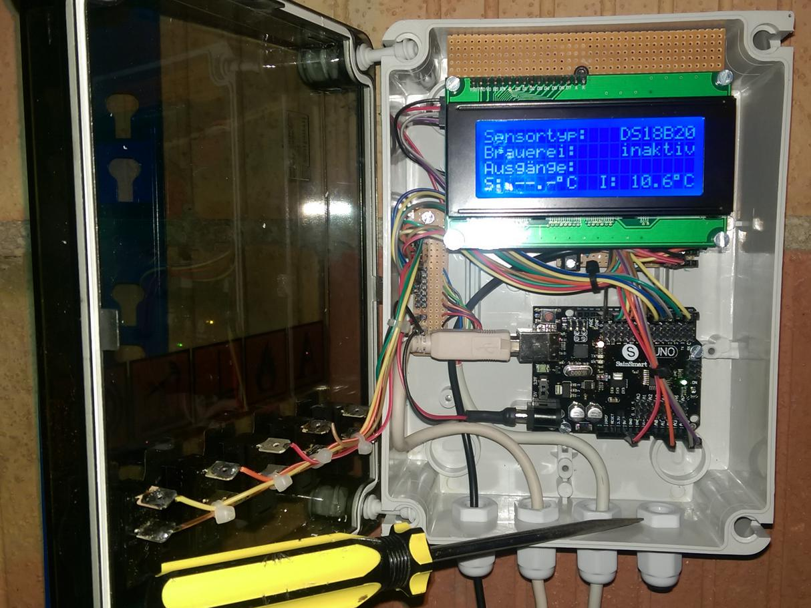

Hilfe Datei zu Brauerei V 1.60 – by Emilio – HOME
Steuerung und Messung mit Arduino:
Mit den mitgelieferten Arduino Sketches ist es möglich die Temperaturmessung, das Schalten der Hardware, ein externes Display sowie das manuelle Schalten der Hardware mittels eines Arduinos vorzunehmen.
Hierzu gibt es die zwei Kommunikationsvarianten USB oder LAN. Im Installationspaket ist jeweils ein passender Arduino-Sketch und ein Schaltplan enthalten.
Zur Verdeutlichung der Funktion hier zwei Blockschaltbilder:
Wird in den Einstellungen an einer der möglichen Stellen Arduino gewählt, dann können die notwendigen Einstellungen in einem nur dann verfügbaren Reiter vorgenommen werden.
Verwendeter Sensortyp am Arduino
Kommunikationstyp zum Arduino LAN bzw. USB
IP-Adresse an die UDP-Schalt-Nachricht gesendet wird
Port auf dem die UDP-Schalt-Nachricht gesendet wird
Port auf dem nach Temperaturwerten gelauscht wird
Verwendeter Sensortyp am Arduino
Kommunikationstyp zum Arduino LAN bzw. USB
USB-Port auf dem kommuniziert wird
Ein Beispiel-Aufbau kann z.B. so aussehen:
